Name: Solution GuideMath 241: Calculus & Analytic Geometry A
Exam 1
4 October 2002
Always the beautiful answer who asks a more beautiful question.
-E. E. Cummings
Instructions: Show all work to receive full or partial credit. All University rules and guidelines for student conduct are applicable.
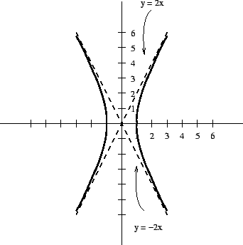
The standard form for a hyperbola with this orientation is
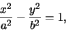
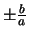
. Therefore, we need b=2 to match the diagram, so that the equation is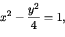
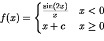
For a function to be continuous at a point x=a:
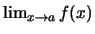
must exist. This means you must check the limit from each side in cases like x=0.We see that the function is defined to be the ratio of a sine function and a polynomial on the left. Since there are no singularities on the left because x=0 is not in the domain, the function is continuous on
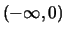
. Similarly, polynomials are continuous so the f(x) is also continuous on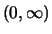
. We just need to see what happens at x=0 where the two domains meet.
We see that
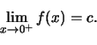
On the left, we find that
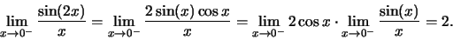
Thus, for f(x) to be continuous, c=2.
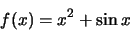
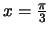
. Simplify your solution as much as possible.
Anticipating that we are going to use point-slope form for the tangent
line, we need a point on the curve. Only
is given,
we must find
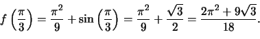
Now that we have a point on the curve, we must find its slope
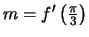
.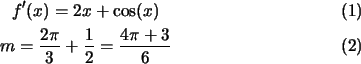
Now, we have all the information that we need. An equation for the
tangent line would be
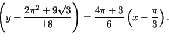
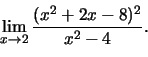
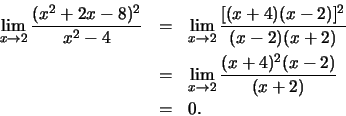
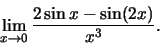
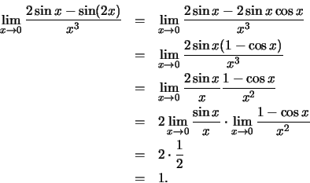
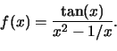
Here, we apply the quotient rule.
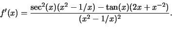
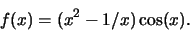
Here we apply the product rule.
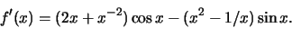